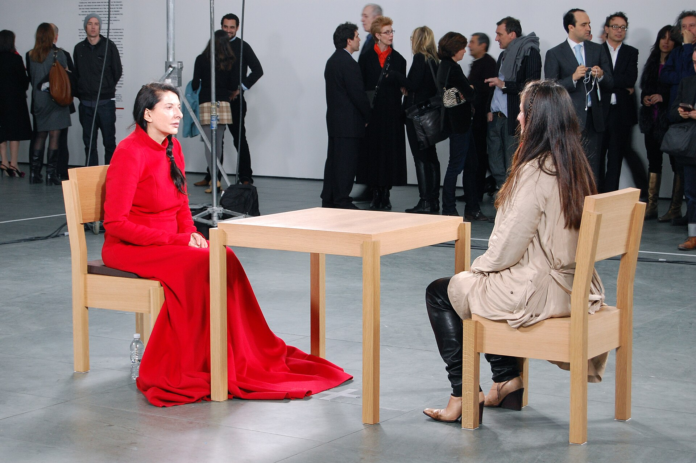
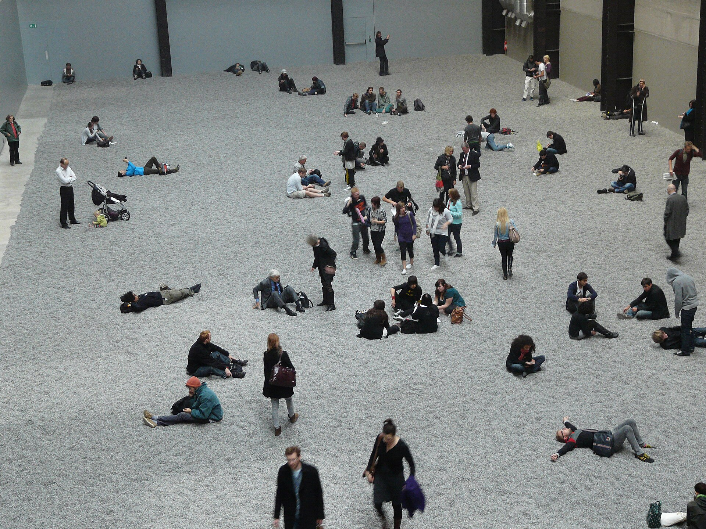

대표 화가
마리나 아브라모비치, 《예술가가 여기 있다》 · 현대미술 · 국제 현대미술
선정 이유: 아브라모비치의 장시간 퍼포먼스는 작가의 몸, 지속 시간, 관객의 참여만으로 작품이 성립하는 방식을 명확히 보여 준다.
작가는 미술관에서 매일 침묵한 채 앉아 한 번에 한 관객과 시선을 마주했다. 물체로 남는 작품보다 공유된 시간, 신체적 인내, 관객의 감정이 핵심이 되어 설치·퍼포먼스 미술의 경험적 성격을 드러낸다.
Contemporary Art
연결 학습
현대미술은 대략 1980년대 이후 현재까지의 다양한 미술을 가리키는 시대 범주이지 하나의 사조가 아니다. 매체, 지역, 정체성, 제도, 기술이 복수의 방식으로 얽히므로 무엇을 만들었는가와 함께 어떤 관계와 상황을 만들었는가를 보아야 한다.
포스트모더니즘의 인용과 제도 비판을 포함할 수 있지만 그것보다 넓은 현재의 범주다. 따라서 하나의 대표 양식이나 중심 국가로 정리하지 않는다.
흔한 오해: 살아 있는 작가의 모든 작품이 같은 의미의 현대미술이거나 새 기술을 쓰면 자동으로 혁신적인 것은 아니다. 작품이 현재의 사회·매체 조건을 어떻게 조직하는지가 중요하다.
학술 참고: MoMA · Contemporary art
현대미술의 시대적 배경과 시각적 특징을 국가별 전개 속에서 살펴본다.
| 국가·지역·세부 사조 | 지역적 특징 | 대표 화가·제작자 | 더 볼 화가 |
|---|---|---|---|
| 국제 현대미술 — 설치·퍼포먼스 미술 |
| 마리나 아브라모비치 | 요제프 보이스, 앨런 캐프로, 구사마 야요이 |
| 국제 현대미술 — 뉴미디어·디지털 아트 |
| 히토 슈타이얼 | 백남준, 빌 비올라, 린 허시먼 리슨 |
| 국제 현대미술 — 거리·참여 미술 |
| 뱅크시 | JR, 키스 해링, 아이 웨이웨이 |

선정 이유: 아브라모비치의 장시간 퍼포먼스는 작가의 몸, 지속 시간, 관객의 참여만으로 작품이 성립하는 방식을 명확히 보여 준다.
작가는 미술관에서 매일 침묵한 채 앉아 한 번에 한 관객과 시선을 마주했다. 물체로 남는 작품보다 공유된 시간, 신체적 인내, 관객의 감정이 핵심이 되어 설치·퍼포먼스 미술의 경험적 성격을 드러낸다.
더 볼 이유: 보이스는 현대 퍼포먼스와 설치가 상징적 행동을 통해 사회적 치유와 정치적 질문을 제기하는 방식을 보여 준다.
작가의 몸·코요테·펠트가 며칠간 관계를 형성한 점에서 작품을 시간과 상황으로 보는 퍼포먼스 미술의 특징이 드러난다. 모든 사람이 사회를 변화시키는 창조자라는 사회적 조각 개념은 보이스만의 특성이다. 다른 사조 연결: 플럭서스·개념미술에도 속하며, 이 카드에서는 설치·퍼포먼스 미술의 관점에서 본다.
더 볼 이유: 캐프로는 설치와 퍼포먼스가 관객의 이동·행동·시간으로 이루어지는 해프닝 형식을 확립했다.
분리된 공간에서 정해진 신호에 따라 관객과 행위자가 움직여 작품이 하나의 상황으로 존재한다. 회화의 환경을 실제 생활 사건으로 확장한 점은 캐프로만의 특성이다.
더 볼 이유: 구사마는 반복 무늬와 거울 설치를 통해 개인적 강박을 관람자가 들어가는 무한 공간으로 확장했다.
거울과 반복되는 빛·물체가 몸의 경계를 흩뜨려 설치미술의 몰입적 경험을 만든다. 자전적 환각을 대중이 공유하는 환경으로 바꾼 점은 구사마만의 특성이다.
선정 이유: 슈타이얼은 교육 영상의 형식을 비틀어 감시, 저해상도 이미지, 디지털 가시성의 정치학을 설명하는 동시대 미디어 미술의 기준점이다.
로봇 음성과 합성 화면이 보이지 않는 방법을 익살스럽게 가르치지만 배경에는 군사용 항공 촬영의 보정 표적이 등장한다. 디지털 이미지는 현실을 단순히 기록하지 않고 누가 보이고 지워지는지를 결정하는 권력 장치가 된다.
더 볼 이유: 백남준은 플럭서스의 사건성과 비디오 기술을 결합해 뉴미디어 미술의 핵심 언어를 만든 작가다.
텔레비전 영상과 전자 회로가 공간 전체를 구성하는 점에서 뉴미디어 미술의 기술·시간 기반 특성이 드러난다. 방송 매체를 일방적 전달 수단이 아니라 유희적이고 참여 가능한 조각 재료로 바꾼 점은 백남준만의 특성이다. 다른 사조 연결: 플럭서스·개념미술에도 속하며, 이 카드에서는 뉴미디어·디지털 아트의 관점에서 본다.
더 볼 이유: 비올라는 비디오의 느린 시간과 대형 투사를 통해 물·불·탄생·죽음을 명상적 설치 경험으로 만든 작가다.
인물이 극도로 느리게 물과 불에 휩싸이며 영상의 시간 자체가 관람의 주제가 된다. 첨단 매체를 오래된 종교화처럼 집중적인 감정 경험으로 바꾼 점은 비올라만의 특성이다.
더 볼 이유: 허시먼 리슨은 뉴미디어와 퍼포먼스를 이용해 가상 정체성·감시·기술 속 여성 주체를 일찍부터 탐구한 작가다.
가공의 인물이 실제 계좌와 광고, 사회관계를 갖게 되어 현실과 데이터 정체성의 경계를 흔든다. 관객 상호작용과 네트워크를 작품 구조로 삼은 점은 허시먼 리슨만의 특성이다.
선정 이유: 뱅크시는 스텐실의 즉시성, 공공장소, 익명성, 대중적 복제를 결합해 거리미술의 확산 구조를 이해하기 쉽게 한다.
검은 소녀의 실루엣과 멀어지는 붉은 하트 풍선은 단순해서 멀리서도 즉시 읽히고 다양한 장소와 매체로 복제된다. 작품의 의미는 벽의 위치, 도시의 사건, 관객의 공유와 재해석 속에서 계속 바뀐다.
더 볼 이유: JR은 거리·참여 미술이 지역 주민의 초상을 도시 규모의 공공 이미지로 바꾸는 방식을 보여 준다.
현장에서 촬영한 주민의 얼굴을 건물과 다리에 붙이고 제작 과정에 공동체가 참여한 점에서 참여 미술의 특징이 드러난다. 익명성을 유지하면서도 거대한 눈과 얼굴로 보이지 않던 사람에게 공적 가시성을 돌려주는 것이 JR만의 특성이다.
더 볼 이유: 해링은 거리미술의 단순한 기호와 반복 선을 공공 보건·인권 메시지에 결합한 화가다.
굵은 윤곽과 즉시 읽히는 인물이 도시 벽면에서 빠르게 소통해 거리미술의 대중성을 드러낸다. 미술관과 지하철·공공 벽화를 오가며 사회운동의 시각 언어를 만든 점은 해링만의 특성이다.

더 볼 이유: 아이 웨이웨이는 설치와 참여, 디지털 소통을 통해 대량생산·국가 권력·개인의 목소리를 함께 다루는 작가다.
수많은 수제 도자기 씨앗은 집단과 개인, 수공예와 대량생산의 모순을 체험하게 한다. 작품 제작과 사회적 발언을 분리하지 않고 공론장으로 확장한 점은 아이 웨이웨이만의 특성이다.